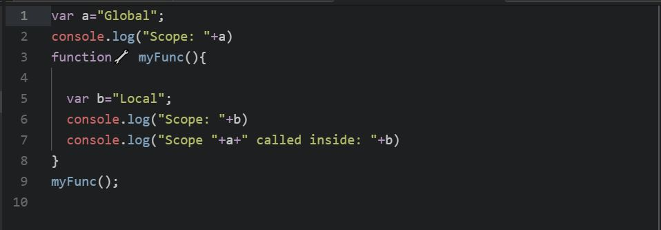

Scope of Variable
in JavaScript using HTML page.
JavaScript has 3 types of scope:
- Global scope
- Function scope
Global Scope
Variables declared Globally (outside any function) have Global Scope.
Global variables can be accessed from anywhere in a JavaScript program.
Variables declared with var, let and const are quite similar when declared outside a block.
Local Scope
Variables declared within a JavaScript function, become LOCAL to the function.
Since local variables are only recognized inside their functions, variables with the same name can be used in different functions.
Local variables are created when a function starts, and deleted when the function is completed.
JavaScript used in this html file:
